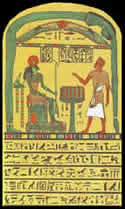

A
Filosofia
A
palavra Thelema (pronuncia-se Télema)
tem origem grega e significa Vontade ou Intenção.
Mas este termo é associado a uma doutrina registrada pela
primeira vez na literatura no século XVI. No ano de 1532,
François Rabelais cita em sua aventura épica Gargantua
e Pantagruel, a fundação de uma abadia de Thelema.
Segundo o autor, uma doutrina que se chocava com os ideais católicos
da época.
A proposta do Thelema está baseada essencialmente
na liberdade e individualidade humana; ou seja, o cultivo e satisfação
plena das próprias vontades. Estas bases ficam evidentes
nos principais conceitos que regem: "Faça o que
tu queres, pois há de ser tudo da lei"; "Todo
homem e toda mulher é uma estrela"; "Tu
não tens o direito, se não fazer a tua vontade..."
Para os adeptos, estes princípios sintetizam a doutrina.
No Thelema toda ação individual é
válida, pois é necessária a evolução.
Porém, é importante que cada indivíduo descubra-se
interiormente pela própria espiritualidade e una-se ao
seu Ego através do amor. Desta forma descubra a Vontade
Verdadeira que existe em si, e que é a motivação
real da existência. A busca e o exercício da Vontade
Verdadeira é a ação que move o ser em direção
a iluminação. Por ser única, esta Vontade
não colide com a Vontade alheia. "O Amor é
a Lei sob a Vontade..." Portanto, cada ser da criação
é único e especial; possui vontades e necessidades
únicas que devem ser supridas.
Por estar fixado em conceitos pessoais, o Thelema
pode variar muito em sua interpretação entre os
adeptos; já que a vontade individual é o principal
mecanismo de busca da auto-satisfação. Por esse
motivo não é considerado uma religião, já
que não existe uma divindade central específica;
pode abrigar vários tipos de crenças e funcionar
como um complemento da religiosidade, de acordo com a vontade
do indivíduo. Porém, em seu desenvolvimento ao longo
dos anos, o Thelema tornou-se um sistema mágico com características
próprias; agregando em si correntes como a Draconiana,
Tifoniana e Ofidioniana. Também influenciou outros sistemas
como a Magia Ritual, Magia
Sexual e as Artes Divinatórias.
A
doutrina foi citada por vários pensadores e estudiosos
em inúmeras publicações no decorrer dos séculos.
Mas se expandiu apenas por volta de 1938, quando o inglês
Aleister Crowley publicou o Liber Al vel Legis.
Atualmente, o Thelema é visto com uma certa
hostilidade por aqueles que o conhecem superficialmente. O nome
de Crowley está muito associado a esta doutrina, e os mitos
que cercaram sua vida prestam uma imagem negativa a esta doutrina.
Além disso, a noção libertária dos
conceitos thelêmicos pode transmitir um falso aspecto egoísta,
onde valoriza-se exageradamente a própria vontade e menospreza-se
o altruísmo. Na verdade "O Amor é a Lei
sob a Vontade", e "Todo homem e toda mulher
é uma estrela..." Aqui fica evidente que o Amor
se sobrepõe aos outros valores, e a individualidade humana
é divinizada, respeitada por que cada um é uma estrela.
Crowley: Breve
Biografia
Edward Alexander Crowley nasceu em 12 de Outubro
de 1875, em Leamington, Inglaterra. Recebeu de seus pais uma rígida
educação cristã, da qual hostilizava desde
a infância. Freqüentou o Trinity College da Universidade
de Cambridge e formou-se em química.
Crowley conheceu George Cecil Jones, membro do
Amanhecer Dourado: uma sociedade secreta que transmitia
ensinamentos relativos à astrologia,
magia, cabala, alquimia e outros temas herméticos. Assim,
aos 23 anos foi iniciado nesta sociedade e rapidamente elevou-se
em sua hierarquia. Numa viagem ao Egito em 1904, Crowley e sua
esposa vivenciaram as experiências que resultariam no livro
da filosofia thelêmica, o Liber Al vel Legis.
Após a morte de sua filha em 1906, Crowley
reuniu-se novamente com Cecil Jones e criou a Astrum Argentium:
uma ordem iniciática que dava continuidade ao já
extinto Amanhecer Dourado. Aqui foram implantados e difundidos
os primeiros conceitos do Thelema. Nos anos seguintes, Crowley
dedica-se aos estudos, escreve e publica vários livros
de cunho poético-místico.
Em 1909, Crowley e Rose Kelly se separam. No ano
seguinte, o inglês é convidado por Theodore Reuss
e ingressa na Ordo Templi Orientis (O.T.O): uma ordem
alemã composta dos mais elevados Maçons. Assim,
teve a oportunidade de desenvolver a filosofia thelêmica
na O.T.O, que posteriormente se desligaria totalmente da Maçonaria.
Em 1910 escreve o Liber CCCXXXIII, que
seria publicado em 1913 e maldosamente classificado como o Livro
das Mentiras. Nos anos posteriores, prossegue escrevendo
e publicando várias obras relacionadas ao ocultismo. Em
Abril de 1920, Crowley funda a Abadia de Thelema, na Sicília,
Itália. Ordem que seria extinta em três anos, quando
Mussolini o expulsaria do país.
A publicação de Confessions of
Aleister Crowley em 1930, proporcionou ao autor a oportunidade
de conhecer pessoalmente o poeta lusitano Fernando Pessoa, que
também era astrólogo. Pessoa enviou uma carta a
Crowley avisando-o que seu mapa astral estava incorreto. O inglês
respondeu e manifestou sua vontade de conhecer o poeta. Assim,
o encontro deu-se no porto de Lisboa. Nos anos seguintes, suas
publicações mais significativas foram o Liber Al
vel Legis, em 1938, e em 1942 o Liber OZ: manifesto dos
direitos e deveres do homem; muito semelhante ao que ainda seria
criado pela ONU.
Crowley
passou grande parte de sua vida viajando, escrevendo e estudando
diversas culturas ocultistas, bancado pela herança de sua
família e doações de amigos e discípulos.
Demonstrava um ávido desejo de sabedoria. Foi intelectualmente
privilegiado, destacando-se desde a infância, quando lia
a bíblia em voz alta e era prodígio nas disciplinas
escolares, até os elevados graus que alcançou nas
sociedades secretas que participou em todo o planeta. Vários
de seus discípulos deram continuidade ao seu legado, criando
ordens ao redor do mundo e estabelecendo um novo rumo dos pensadores
contemporâneos, influenciando de forma significativa o universo
ocultista e artístico desta época.
No Brasil, Raul Seixas e Paulo Coelho são
frutos diretos do legado de Crowley. Entre outras, as músicas
A Lei e Sociedade Alternativa (de autoria de
ambos), não apenas mencionam, mas dissertam sobre os conceitos
do mago inglês.
Edward A. Crowley incorporou vários pseudônimos
criados por ele mesmo (incluindo Aleister, Mega Therion,
666, A Besta...), ou atribuídos pela
imprensa, como: O Homem mais perverso do mundo. Teve
uma vida polêmica que se opôs aos conceitos puritanos
e retrógrados de sua sociedade. Morreu pobre e doente aos
72 anos, no dia 1º de dezembro de 1947 em Hastings, Inglaterra,
vítima de bronquite e complicações cardíacas.
Liber Al vel Legis
Em Abril de 1904, Crowley e sua esposa Rose Kelly
viajaram para o Egito. Neste período, Rose passou a entrar
em transe repentinamente e declarar que a divindade egípcia
Horus tentava comunicar-se com Crowley através
dela.
Assim,
o casal visitou o museu do Cairo e identificou a Estela da
Libertação: um painel egípcio da 26º
Dinastia onde um sacerdote oferece sacrifício ao deus Horus.
Este fato foi uma revelação mística interpretada
por Crowley. Dessa forma, ouvindo os ditos de Rose em estado meditativo,
que falava em nome da divindade Aiwass, deu início ao trabalho
que duraria três dias consecutivos, sempre entre as 12 e
13 horas, e se tornaria o Liber Al vel Legis (Líber Legis
ou Livro da Lei), onde Thelema é citado como a palavra
de ordem.
Durante 34 anos, Crowley estudou o significado
do Liber Legis, publicando-o apenas em 1938. Este é o seu
primeiro livro de princípios místicos. Possui uma
linguagem simples mas interpretativa, onde é necessária
muita aplicação para uma compreensão mínima.
Além disso, o livro cita em suas entrelinhas algumas profecias
e fatos ocorridos na história da humanidade.
Segundo o Livro da Lei, os deuses se revezam na
condução dos destinos dos planetas por um período
de 2000 anos. Cada um de seus três capítulos faz
referência a uma era (Aeon) da evolução humana.
O primeiro capítulo caracteriza o Aeon de Ísis:
regido pelo arquétipo da divindade feminina. Quando o Universo
é concebido como alimento direto da deusa.
O segundo capítulo está relacionado
ao Aeon de Osíris, onde predomina o arquétipo
do deus morto e o domínio das religiões patriarcais
(talvez uma alusão ao Cristianismo). Neste período
que se inicia aproximadamente em 500 a. C., a humanidade sofrerá
as revoluções necessárias e inerentes à
sua evolução: catástrofes, amor, morte e
ressurreição.
O terceiro e último capítulo descreve
o início do Aeon de Horus, filho de Isis e Osíris.
Neste período que é inaugurado em 1904, cada ser
se caracterizará como célula única da humanidade,
e o desenvolvimento individual será essencial para a iluminação
do coletivo. Este é o período do crescimento da
criança (humanidade) através de suas próprias
experiências. A Lei é a Vontade, que será
revelada integralmente, e o Thelema se estabelecerá como
a bússola da espiritualidade humana.
Por
Spectrum